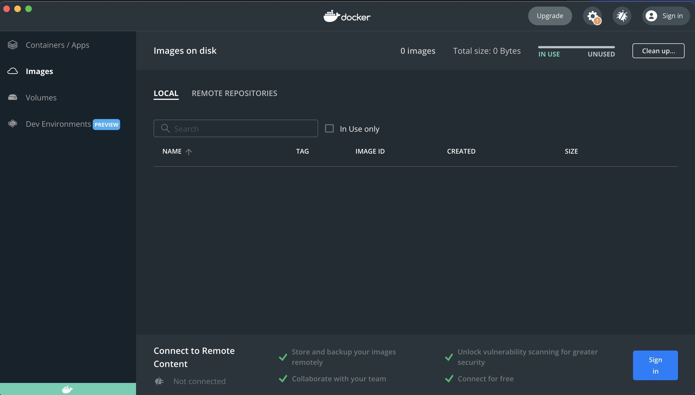
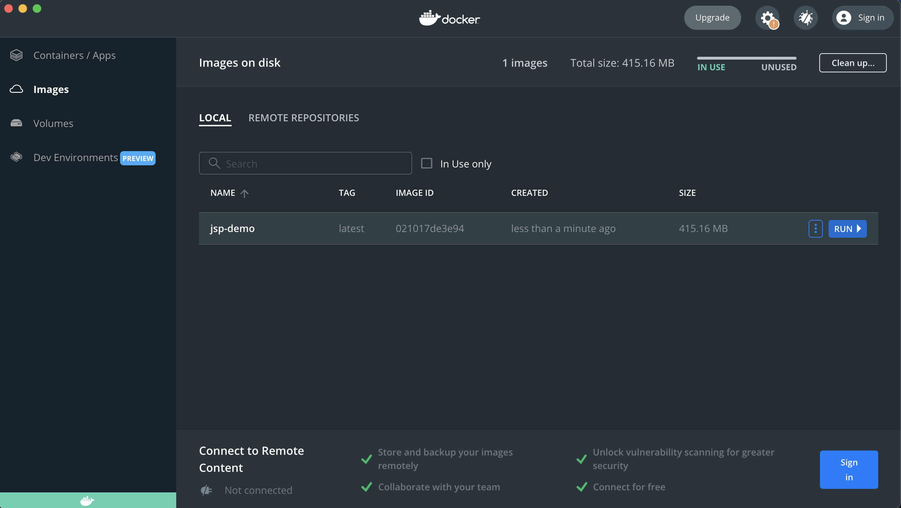
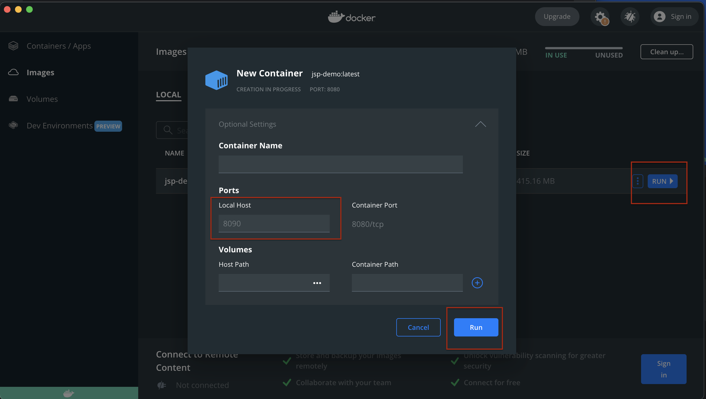
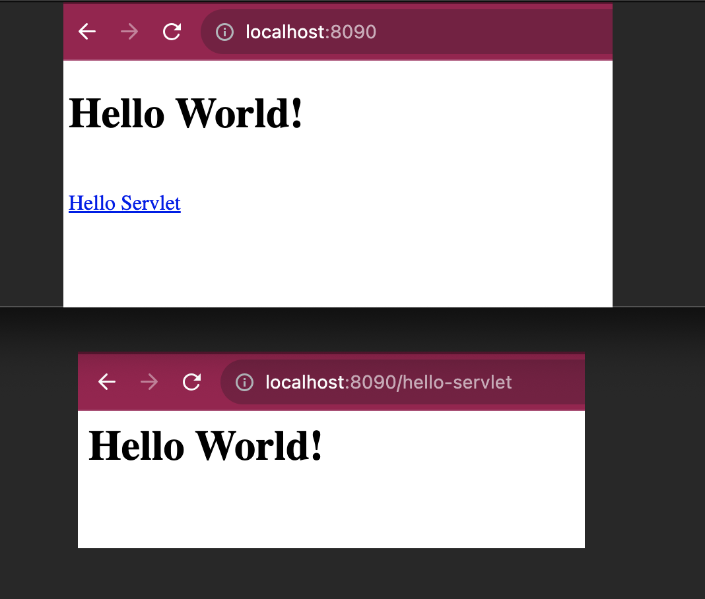
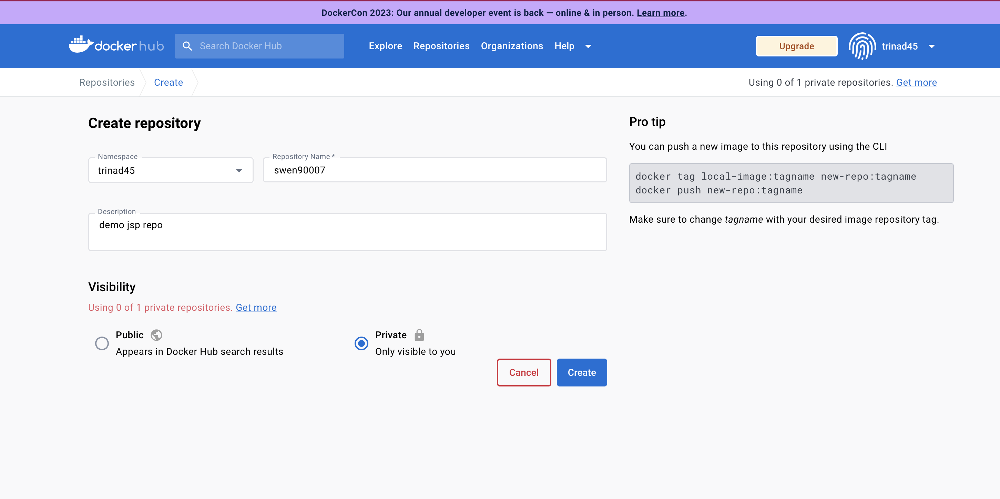
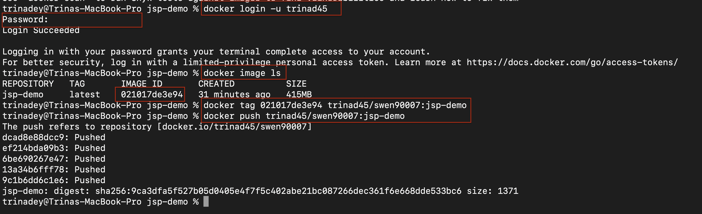
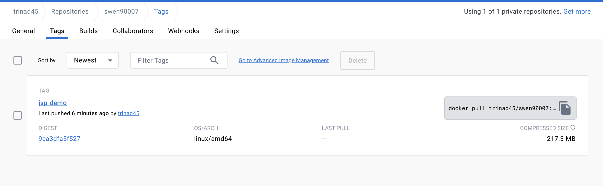

Step 8: Setup Docker#
Setup Docker on Local Environment#
Docker provides a container to run your applications isolated from the other processes running on host machine.
Install Docker Desktop based on your Operating System. Download Docker After you have installed the docker, run the docker from your application menu. You can see an empty Docker Dashboard opens up.

Why run docker?
Because it helps you to standardise your installations regardless of your operating system and focus only on the steps necessary for you to run your applications.
What does that even mean?
Remember how you had to set several environment variables to run Java, install jdk, maven etc and perform different steps as a prerequisite to fulfill before you can start writing and deploying your applications. With Docker, you can just do it using a single line by using pre-existing Docker Image.
What is a Docker Image?
A Docker image contains everything needed to run an application - all dependencies, configurations, scripts, binaries. There are prexisting images in Docker Hub that you can use to define installations/configurations/dependencies like maven or java.
Below will help you to fetch an image which has all the necessary configurations for maven and then you can simply run maven commands without getting into the hassle of performing installations steps on different machines.
FROM maven:3.9-amazoncorretto-17 AS build
Why do we need Docker in our Java Applicaiton?
Since you will be deploying your application on a cloud provider, it is easier to deploy a docker container than performing multiple steps on the cloud instances/servers. In our case we will deploy our application on Render which does not provide support for Java but provides support for Docker images.
Learn more about Docker here
Running Java Application with Docker#
In your case you will use two pre-existing images maven and java to build your application using maven and run your application using the java Docker image. Using these two you will create your own Application’s Image that you can push to Docker hub and deploy on Render.
To get started in your project repo, create a file named Dockerfile. For simplicity and avoid complications,
keep the name as is. Add the following content to your Dockerfile.
# build stage
FROM maven:3.9-amazoncorretto-17 AS build
WORKDIR /app
COPY . .
RUN mvn clean install
# run stage
FROM tomcat:10.0.27-jre17
COPY --from=build /app/target/demo-1.0-SNAPSHOT.war $CATALINA_HOME/webapps/jsp-demo.war
This file performs following actions:
Pulls a maven image from DockerHub that contains all your configuration required to build your applications
Sets a working director named app
COPY everything from your current path (.) to the Docker working director (.)
Compiles and packages your code, similar to what you do on your local environment that creates a target folder.
Pulls a Tomcat Image from DockerHub to provide java runtime and tomcat server to run your application
Copy the war from the target folder from your build stage (step 4) to the webapps directory of tomcat server
Expose port 8080, when your application start, the embedded tomcat container sets port 8080.
To build this docker image on your local machine, the docker application must be running. Else you will face an error. To build the docker image, run below command
docker build -t jsp-demo .
The option -t defines a tag for your docker image, in this case named as jsp-demo. The . in the end of the command signifies where the Dockerfile can be found. Thus, you need to run this command from the folder where you have Dockerfile. Once the image is built you can see this in your dashboard as well.

To run the docker image on your local machine run below command -
docker run -p 8090:8080 jsp-demo
The above command deploys the docker container from the image named jsp-demo created in previous step and maps the port 8090 to 8080. the port 8080 is the port of embedded tomcat that you have exposed from your code. The port 8090 is the port where the docker container is listening to handle the requests.
Alternatively, you can run the docker container from the dashboard as well. Also you can set any port of your choice and not just 8090 
Once the container is running then if you type http://localhost:8090/jsp-demo on your web browser, you should be able to view your application deployed.

Important
Note that with docker container and tomcat server, the application context is set to the name of the war. Thus, instead of http://localhost:8090/ you may have to use http://localhost:8090/jsp-demo
Pushing Docker Image to DockerHub#
Create an account on Docker Hub. Verify your email. Create a private repo in DockerHub

Attention
To secure code from plagiarism, please ensure that you have selected your repo as private.
run below commands
docker login -u <username>
docker image ls
docker tag <imageid> <username>/<reponame>:<image tag>
docker push <username>/<reponame>:<image tag>

You can verify in DockerHub that your image has been successfully pushed.

What’s Next
Please proceed to Step 9: Deploy to Render.